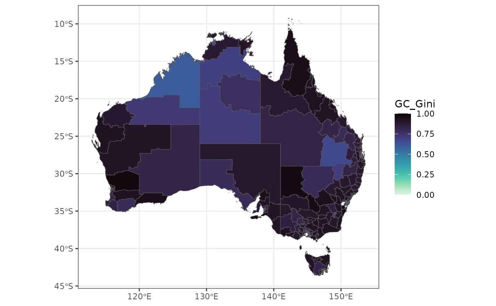

geocomplexity for spatial vector data based on spatial dependence
Source:R/geocd_vector.R
geocd_vector.RdThis function calculates geocomplexity for spatial vector data based on spatial dependence.
Arguments
- sfj
An
sfobject or spatial vector object that can be converted tosfbysf::st_as_sf().- wt
(optional) Spatial weight matrix. Must be a
matrixclass.- method
(optional) In instances where the method is
moran, geocomplexity is determined using local moran measure method. Conversely, when the method isspvar, the spatial variance of attribute data serves to characterize geocomplexity. For all other methods, the shannon information entropy of attribute data is employed to represent geocomplexity. The selection of the method can be made from any one of the three options:moran,spvarorentropy. Default ismoran.- normalize
(optional) Whether to further normalizes the calculated geocomplexity. Default is
TRUE.- returnsf
(optional) When
returnsfisTRUE, return an sf object, otherwise a tibble. Default isTRUE.
Note
If wt is not provided, for polygon vector data, geocomplexity will use a first-order queen
adjacency binary matrix; for point vector data, the six nearest points are used as adjacency
objects to generate an adjacency binary matrix.
Examples
econineq = sf::read_sf(system.file('extdata/econineq.gpkg',package = 'geocomplexity'))
gc = geocd_vector(econineq)
#> Warning: neighbour object has 2 sub-graphs;
#> if this sub-graph count seems unexpected, try increasing the snap argument.
gc
#> Simple feature collection with 333 features and 9 fields
#> Geometry type: MULTIPOLYGON
#> Dimension: XY
#> Bounding box: xmin: 112.9211 ymin: -43.63311 xmax: 153.6299 ymax: -9.223927
#> Geodetic CRS: GDA94
#> # A tibble: 333 × 10
#> GC_Gini GC_Induscale GC_IT GC_Income GC_Sexrat GC_Houseown GC_Indemp
#> <dbl> <dbl> <dbl> <dbl> <dbl> <dbl> <dbl>
#> 1 0.899 0.922 0.945 0.952 0.845 0.906 0.858
#> 2 0.895 0.919 0.849 0.925 0.770 0.825 0.853
#> 3 0.922 0.919 0.861 0.914 0.729 0.759 0.888
#> 4 0.921 0.919 0.834 0.949 0.775 0.807 0.892
#> 5 0.850 0.924 0.830 0.930 0.778 0.889 0.863
#> 6 0.944 0.920 0.873 0.956 0.782 0.856 0.865
#> 7 0.910 0.921 0.891 0.957 0.799 0.865 0.809
#> 8 0.924 0.919 0.817 0.938 0.810 0.834 0.910
#> 9 0.929 0.919 0.663 0.901 0.768 0.837 0.911
#> 10 0.918 0.919 0.841 0.957 0.758 0.863 0.927
#> # ℹ 323 more rows
#> # ℹ 3 more variables: GC_Indcom <dbl>, GC_Hiedu <dbl>,
#> # geometry <MULTIPOLYGON [°]>
library(ggplot2)
library(viridis)
#> Loading required package: viridisLite
ggplot(gc) +
geom_sf(aes(fill = GC_Gini)) +
scale_fill_viridis(option = "mako", direction = -1) +
theme_bw()
